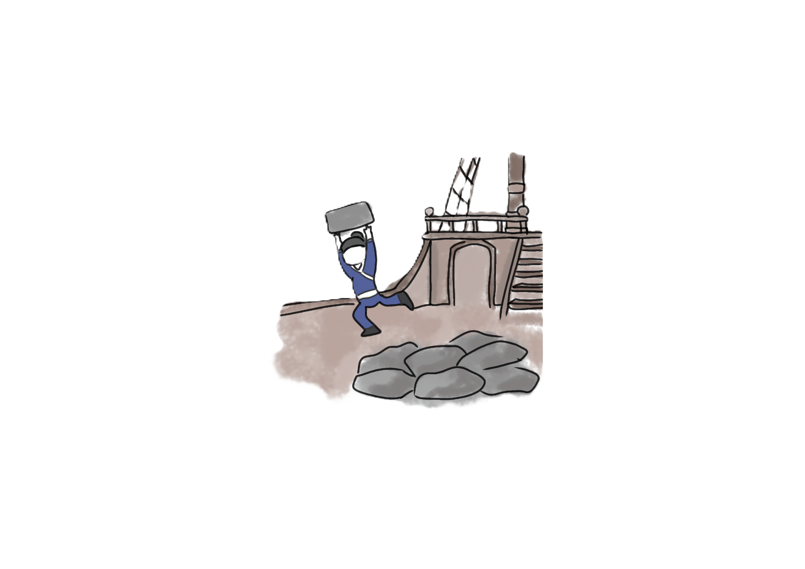
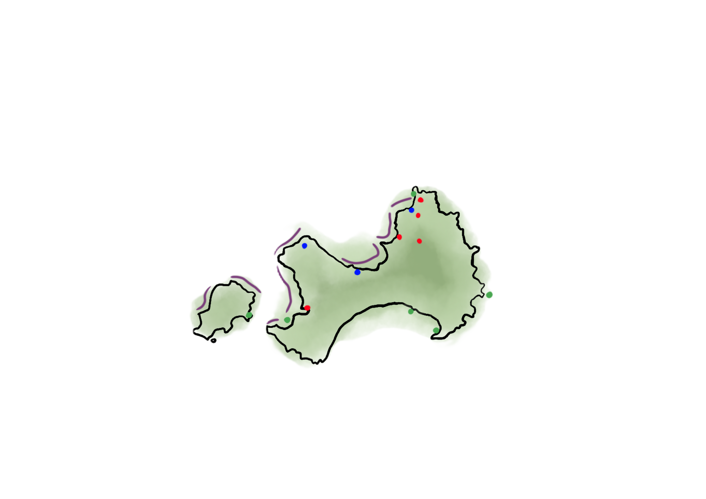
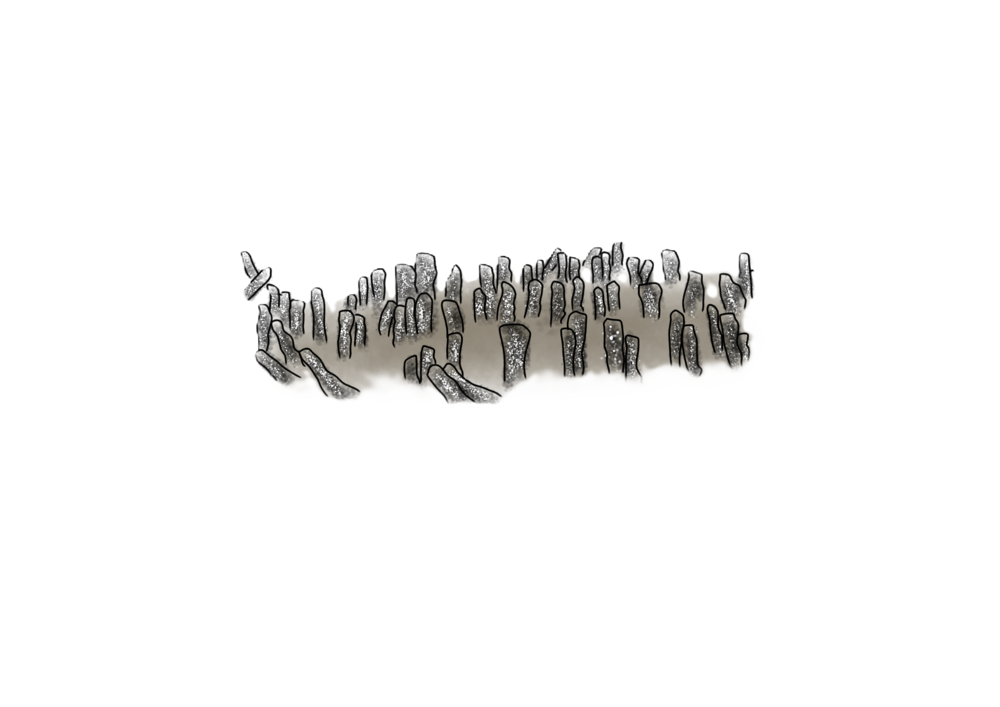
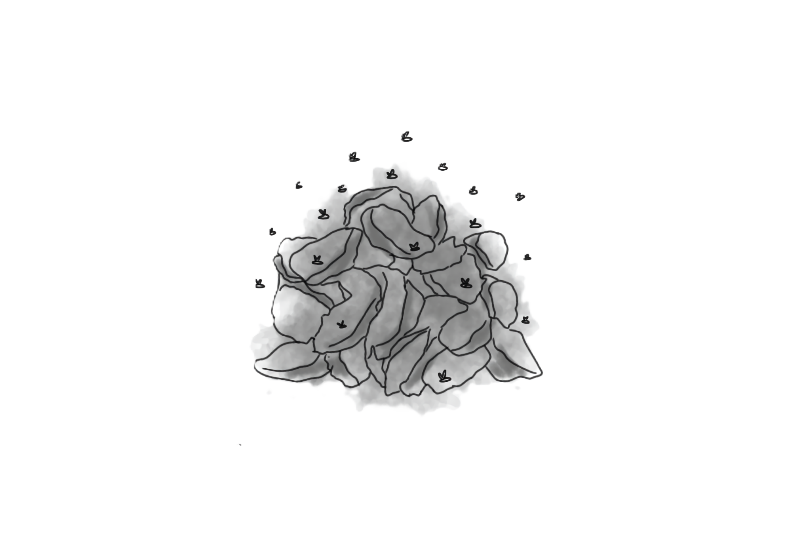

回程時把花崗石當成壓艙石載回來後，隨意丟棄在海邊
明朝官吏李獻可在海上巡查 ，發現福建一帶的海邊很適合養殖石蚵
金門居民把丟棄的花崗石條種植起來來養殖石蚵，於是石蚵產業就此發展起來
隨著工商社會的演進，許多聚落的年輕人口外移發展，石蚵產業漸漸沒落荒廢，傳統養殖工法倒石、車石、豎石等需要勞力的工作都自行省略，僅剩下村莊的老者擎蚵。

全盛時期至少有250萬條，綿延大小金門全北海岸線總長約 41.06 km
(採集面積103.18km2)

蚵田也因長期無人照料導致部分石蚵條漸漸被泥濘覆蓋

早期因造成空汙與處理技術尚不普及至使金門地區對於於蚵殼在社區堆積如塔，不僅會發臭影響空氣品質還佔用土地